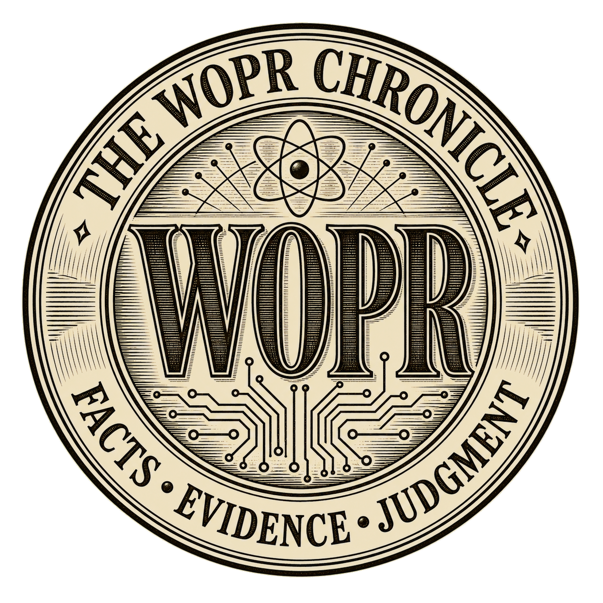
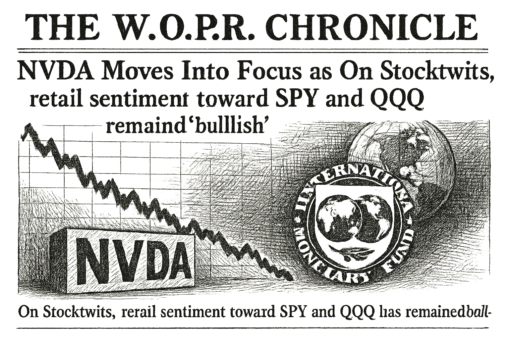

SPY
Current: $749.35Change: +14.06 (+1.91%)
Updated:
Source: yahoo_chartFreshness: fresh

Nvidia’s CEO Jensen Huang ousted; CFO Colette Kress named interim chief executive officer.

Today's Headline: NVDA Moves Into Focus as Nvidia’s CEO Jensen Huang ousted; CFO Colette Kress named interim chief executive officer
Setup: Nvidia’s CEO Jensen Huang ousted; CFO Colette Kress named interim chief executive officer.
Primary Topic: Nvidia Leadership Change
Specific Development: Nvidia's CEO Jensen Huang has been ousted, leading to a recovery in S&P 500 and Nasdaq futures.
Why Today Is Different: This leadership change comes at a critical time as oil prices surge, impacting market sentiment positively.
Secondary Topics: Oil Prices; Market Recovery; Tech Sector
Tone: optimistic
Sectors: Technology; Energy
Companies: Nvidia; Brent; WTI
Commodities: Oil
Countries Or Regions: United States
Macro Themes: Market Recovery; Leadership Changes
Why This Story: The ousting of a high-profile CEO can significantly shift investor sentiment, especially when coupled with rising commodity prices.
Why This Matters: S&P 500, Dow, Nasdaq Futures Recover After Markets End Lower On Jensen Huang’s Exit, Oil Price Pressure — is the clearest current evidence-led frame for Joshua's observation-only review; missing facts remain explicit intelligence gaps.
Summary: Global markets saw a rebound in tech stocks following Nvidia's leadership change, while oil prices surged.
What Happened Overnight: Nvidia's CEO was ousted, leading to a recovery in tech stocks, and oil prices rose sharply.
What Changed Materially: The leadership change at Nvidia and the increase in oil prices are significant market movers.
Which Assets Sectors Are Affected: Tech stocks, particularly Nvidia, and the energy sector due to rising oil prices.
Does It Look Like Noise Or A Real Regime Input: This appears to be a real regime input given the leadership change and its potential impact.
Why This Matters: Joshua can use verified cross-asset moves and deterministic risk context while keeping causation explicitly unresolved.
NVDA Earnings Results — 2026-11-17, After Close
Consensus EPS: $2.52
Year-ago EPS: unavailable
Expected EPS growth: unavailable
Consensus revenue: $111.2B
Year-ago revenue: unavailable
Expected revenue growth: unavailable
Actual EPS: unavailable vs $2.52 expected
Beat/Miss: unavailable — canonical actual EPS was not supplied.
Actual revenue: unavailable vs $111.2B expected
Beat/Miss: unavailable — canonical actual revenue was not supplied.
Expectation provenance: current_provider_calendar_snapshot · Snapshot: unavailable
Source: finnhub_earnings_calendar · As of: 2026-11-13T15:15:07.921753+00:00 · Freshness: current
ZIM Earnings Results — 2026-11-18, Before Open
Consensus EPS: $3.85
Year-ago EPS: unavailable
Expected EPS growth: unavailable
Consensus revenue: $2.5B
Year-ago revenue: unavailable
Expected revenue growth: unavailable
Actual EPS: unavailable vs $3.85 expected
Beat/Miss: unavailable — canonical actual EPS was not supplied.
Actual revenue: unavailable vs $2.5B expected
Beat/Miss: unavailable — canonical actual revenue was not supplied.
Expectation provenance: current_provider_calendar_snapshot · Snapshot: unavailable
Source: finnhub_earnings_calendar · As of: 2026-11-13T15:15:07.921753+00:00 · Freshness: current
ANGX Earnings Results — 2026-11-10, After Close
Consensus EPS: $-0.07
Year-ago EPS: unavailable
Expected EPS growth: unavailable
Consensus revenue: $143.2M
Year-ago revenue: unavailable
Expected revenue growth: unavailable
Actual EPS: unavailable vs $-0.07 expected
Beat/Miss: unavailable — canonical actual EPS was not supplied.
Actual revenue: unavailable vs $143.2M expected
Beat/Miss: unavailable — canonical actual revenue was not supplied.
Expectation provenance: provider_snapshot_before_scheduled_event · Snapshot: 2026-11-10T15:20:42.773845+00:00
Source: finnhub_earnings_calendar · As of: 2026-11-13T15:15:07.921753+00:00 · Freshness: current
LINK Earnings Results — 2026-11-10, Time Unavailable
Consensus EPS: $-0.04
Year-ago EPS: unavailable
Expected EPS growth: unavailable
Consensus revenue: $3.4M
Year-ago revenue: unavailable
Expected revenue growth: unavailable
Actual EPS: unavailable vs $-0.04 expected
Beat/Miss: unavailable — canonical actual EPS was not supplied.
Actual revenue: unavailable vs $3.4M expected
Beat/Miss: unavailable — canonical actual revenue was not supplied.
Expectation provenance: provider_snapshot_before_scheduled_event · Snapshot: 2026-11-10T15:20:42.773845+00:00
Source: finnhub_earnings_calendar · As of: 2026-11-13T15:15:07.921753+00:00 · Freshness: current
QBTS Earnings Results — 2026-11-10, Before Open
Consensus EPS: $-0.10
Year-ago EPS: unavailable
Expected EPS growth: unavailable
Consensus revenue: $4.4M
Year-ago revenue: unavailable
Expected revenue growth: unavailable
Actual EPS: $-0.11 vs $-0.10 expected
Beat/Miss: $-0.01 / +6.5%
Actual revenue: $4.5M vs $4.4M expected
Beat/Miss: $0.1M / +2.0%
Expectation provenance: provider_snapshot_before_scheduled_event · Snapshot: 2026-11-09T15:19:04.373903+00:00
Source: finnhub_earnings_calendar · As of: 2026-11-13T15:15:07.921753+00:00 · Freshness: current
- WOPR learning pipeline: Collecting samples
- Candidates evaluated 24h: 0
- Current gate: Evidence
- Notification ledger events in 24h: 3
- Pending orders created/canceled/filled/expired: 1/0/0/0
- Pending lifecycle interpretation: Pending-order cancellations have trackable reasons and no obvious rapid churn pattern.
- Portfolio risk: Label: High / Score: 100.0
- Latest intelligence gap report: intelligence_gap_report_2026-11-08.pdf
Why This Matters: The active gate is Evidence, so the key question is why candidates are stopping before approval, not how to force trades.
- Sentinel role: infrastructure and operational status only.
- State: ONLINE
- Last successful validation: 2026-11-13T15:19:14.680372+00:00
- Payloads accepted/rejected: 34374/253
- Node health score: 100
Why This Matters: Sentinel is ONLINE, so Joshua should use its context only to the extent the latest accepted pulse is fresh and authenticated.
CANDIDATES MOVING THROUGH JOSHUA'S INVESTMENT-REVIEW WORKFLOW
FROZEN DAILY BRIEF SNAPSHOT | 2026-11-13T15:16:18.661925+00:00
QUEUE SUMMARY | Investment Ready: 0 | Waiting for Price: 0 | Waiting for Evidence: 2 | Research Underway: 1 | Governance Hold: 6 | Monitor Only: 0
Investment-ready status: No candidates are currently Investment Ready.
#4 AVGO - Governance Hold
Joshua's Thesis: Positive thesis not yet established.
Why Waiting: Governance gate has not cleared.
Price: 364.36 now; 344.03 preferred entry
What Unlocks It: Governance gate clears; Clear valuation support; Evidence that the business quality matches the risk being taken
Portfolio Fit: 18.0/100 — VERY LOW ↓
Portfolio Fit Drivers: projected Technology exposure 57.3%; projected AI infrastructure exposure 57.3%; candidate amount $100 vs $74 currently allocated
Candidate Risk: 74.0/100 — HIGH ↑
Risk Drivers: projected Technology exposure 57.3%; projected AI infrastructure exposure 57.3%; candidate amount $100 vs $74 currently allocated
Next: Re-evaluate after the recorded gate clears. Owner: Columbo.
#8 NVDA - Waiting for Evidence
Joshua's Thesis: Positive thesis not yet established.
Why Waiting: Positioning gate failed.
Price: 166.19 now; 213.27 preferred entry
What Unlocks It: Clear valuation support; Evidence that the business quality matches the risk being taken; Independent evidence streams pointing the same way
Portfolio Fit: 18.0/100 — VERY LOW ↓
Portfolio Fit Drivers: projected Technology exposure 57.3%; projected AI infrastructure exposure 57.3%; candidate amount $100 vs $74 currently allocated
Candidate Risk: 74.0/100 — HIGH ↑
Risk Drivers: projected Technology exposure 57.3%; projected AI infrastructure exposure 57.3%; candidate amount $100 vs $74 currently allocated
Next: Positioning status must no longer be warning. Owner: Joshua.
#10 QBTS - Governance Hold [Moved Up 12->10]
Joshua's Thesis: Positive thesis not yet established.
Why Waiting: Governance gate has not cleared.
Price: 9.84 now; 17.52 preferred entry
What Unlocks It: Governance gate clears; Clear valuation support; Evidence that the business quality matches the risk being taken
Portfolio Fit: 0.0/100 — VERY LOW
Portfolio Fit Drivers: projected Unclassified exposure 71.3%; projected Unclassified exposure 71.3%; candidate amount $100 vs $74 currently allocated
Candidate Risk: 100.0/100 — VERY HIGH
Risk Drivers: projected Unclassified exposure 71.3%; projected Unclassified exposure 71.3%; candidate amount $100 vs $74 currently allocated
Next: Re-evaluate after the recorded gate clears. Owner: Joshua.
#16 PLTR - Governance Hold [Moved Up 18->16]
Joshua's Thesis: Positive thesis not yet established.
Why Waiting: Governance gate has not cleared.
Price: 171.58 now; 196.14 preferred entry
What Unlocks It: Governance gate clears; Clear valuation support; Evidence that the business quality matches the risk being taken
Portfolio Fit: 18.0/100 — VERY LOW ↓
Portfolio Fit Drivers: projected Technology exposure 57.3%; projected AI software exposure 57.3%; candidate amount $100 vs $74 currently allocated
Candidate Risk: 74.0/100 — HIGH ↑
Risk Drivers: projected Technology exposure 57.3%; projected AI software exposure 57.3%; candidate amount $100 vs $74 currently allocated
Next: Re-evaluate after the recorded gate clears. Owner: Columbo.
#17 ANGX - Governance Hold [Moved Up 19->17]
Joshua's Thesis: Positive thesis not yet established.
Why Waiting: Governance gate has not cleared.
Price: 4.36 now; 4.08 preferred entry
What Unlocks It: Governance gate clears; Clear valuation support; Evidence that the business quality matches the risk being taken
Portfolio Fit: 0.0/100 — VERY LOW
Portfolio Fit Drivers: projected Unclassified exposure 71.3%; projected Unclassified exposure 71.3%; candidate amount $100 vs $74 currently allocated
Candidate Risk: 100.0/100 — VERY HIGH
Risk Drivers: projected Unclassified exposure 71.3%; projected Unclassified exposure 71.3%; candidate amount $100 vs $74 currently allocated
Next: Re-evaluate after the recorded gate clears. Owner: Advisory Committee.
#18 DIA - Research Underway [Moved Up 20->18]
Joshua's Thesis: Positive thesis not yet established.
Why Waiting: Research evidence is still being gathered.
Price: Current price unavailable.; Preferred entry not established.
What Unlocks It: Clear valuation support; Evidence that the business quality matches the risk being taken; Independent evidence streams pointing the same way
Portfolio Fit: 18.0/100 — VERY LOW ↓
Portfolio Fit Drivers: projected ETF exposure 57.3%; projected Broad market exposure 57.3%; candidate amount $100 vs $74 currently allocated
Candidate Risk: 74.0/100 — HIGH ↑
Risk Drivers: projected ETF exposure 57.3%; projected Broad market exposure 57.3%; candidate amount $100 vs $74 currently allocated
Next: Clear valuation support; Evidence that the business quality matches the risk being taken; Independent evidence streams pointing the same way. Owner: Columbo.
#19 RCL - Governance Hold [Moved Up 21->19]
Joshua's Thesis: Positive thesis not yet established.
Why Waiting: Governance gate has not cleared.
Price: 321.99 now; 287.72 preferred entry
What Unlocks It: Governance gate clears; Clear valuation support; Evidence that the business quality matches the risk being taken
Portfolio Fit: 0.0/100 — VERY LOW
Portfolio Fit Drivers: projected Unclassified exposure 71.3%; projected Unclassified exposure 71.3%; candidate amount $100 vs $74 currently allocated
Candidate Risk: 100.0/100 — VERY HIGH
Risk Drivers: projected Unclassified exposure 71.3%; projected Unclassified exposure 71.3%; candidate amount $100 vs $74 currently allocated
Next: Re-evaluate after the recorded gate clears. Owner: Columbo.
#24 IONQ - Waiting for Evidence [NEW]
Joshua's Thesis: Positive thesis not yet established.
Why Waiting: Evidence quality is insufficient.
Price: 30.86 now; 40.80 preferred entry
What Unlocks It: Clear valuation support; Evidence that the business quality matches the risk being taken; Independent evidence streams pointing the same way
Portfolio Fit: 0.0/100 — VERY LOW
Portfolio Fit Drivers: projected Unclassified exposure 71.3%; projected Unclassified exposure 71.3%; candidate amount $100 vs $74 currently allocated
Candidate Risk: 100.0/100 — VERY HIGH
Risk Drivers: projected Unclassified exposure 71.3%; projected Unclassified exposure 71.3%; candidate amount $100 vs $74 currently allocated
Next: Data confidence must reach at least 38/100. Owner: Joshua.
#25 SPCX - Governance Hold [NEW]
Joshua's Thesis: Positive thesis not yet established.
Why Waiting: Governance gate has not cleared.
Price: 139.94 now; 148.62 preferred entry
What Unlocks It: Governance gate clears; Clear valuation support; Evidence that the business quality matches the risk being taken
Portfolio Fit: 0.0/100 — VERY LOW
Portfolio Fit Drivers: projected Unclassified exposure 71.3%; projected Unclassified exposure 71.3%; candidate amount $100 vs $74 currently allocated
Candidate Risk: 100.0/100 — VERY HIGH
Risk Drivers: projected Unclassified exposure 71.3%; projected Unclassified exposure 71.3%; candidate amount $100 vs $74 currently allocated
Next: Re-evaluate after the recorded gate clears. Owner: Advisory Committee.
Observation only. This section creates no recommendation, order, authority, or execution instruction.
- Which recorded governance requirement must clear before AVGO can advance?
- If NVDA reaches the recorded price condition <= 213.27, which recorded evidence and governance requirements would still remain?
- Which recorded governance requirement must clear before QBTS can advance?
- Which recorded governance requirement must clear before PLTR can advance?
- What NVDA EPS or revenue result would materially change the current recorded thesis?
The ousting of Nvidia's CEO has led to a positive market reaction, particularly in tech stocks. Coupled with rising oil prices, this could signal a shift in investor sentiment towards equities. However, the volatility in crypto markets suggests caution is warranted. Monitoring these developments will be crucial for portfolio adjustments.
Compared to: 2026-11-12
- Market weather: Cautious -> Balanced
- Top opportunity: Still DELL
- Joshua gate: Still Evidence
- 2Y Treasury.last_price: 4.73 -> 4.86 (up); 2Y Treasury.last_price changed 2.75% versus the prior frozen Chronicle snapshot.
- 2Y Treasury.percent_change: 3.728070175438615 -> 2.7484143763213504 (down); 2Y Treasury.percent_change changed 26.28% versus the prior frozen Chronicle snapshot.
- 10Y Treasury.last_price: 4.98 -> 5.1 (up); 10Y Treasury.last_price changed 2.41% versus the prior frozen Chronicle snapshot.
- 10Y Treasury.percent_change: 2.0491803278688634 -> 2.4096385542168517 (up); 10Y Treasury.percent_change changed 17.59% versus the prior frozen Chronicle snapshot.
- 30Y Treasury.last_price: 5.35 -> 5.43 (up); 30Y Treasury.last_price changed 1.50% versus the prior frozen Chronicle snapshot.
- 30Y Treasury.percent_change: 1.711026615969579 -> 1.4953271028037398 (down); 30Y Treasury.percent_change changed 12.61% versus the prior frozen Chronicle snapshot.
- SPY.last_price: 756.56 -> 749.35 (down); SPY.last_price changed 0.95% versus the prior frozen Chronicle snapshot.
- SPY.percent_change: 3.2141882673942628 -> 1.912170708155974 (down); SPY.percent_change changed 40.51% versus the prior frozen Chronicle snapshot.
- QQQ.last_price: 685.3 -> 674.585 (down); QQQ.last_price changed 1.56% versus the prior frozen Chronicle snapshot.
- QQQ.percent_change: 5.9114442469670045 -> 2.817405883249507 (down); QQQ.percent_change changed 52.34% versus the prior frozen Chronicle snapshot.
- IWM.last_price: 279.17 -> 275.48 (down); IWM.last_price changed 1.32% versus the prior frozen Chronicle snapshot.
- IWM.percent_change: 3.0223632740423634 -> 0.6613804947564593 (down); IWM.percent_change changed 78.12% versus the prior frozen Chronicle snapshot.
The leadership change at Nvidia is a significant event that could influence market dynamics positively.
No new warnings have been issued since yesterday.
Portfolio Construction Review
Current allocation: 74.48 allocated.
Largest sector: Energy at 67.2%.
Largest theme: Energy income at 67.2%.
Diversification: Concentrated (32.8).
Cash allocation: 92.6% unallocated.
Recommended exposure: DELL at portfolio-fit score 18.0.
Portfolio fit: DELL has strong standalone evidence, but it increases portfolio concentration.
Why This Matters: Portfolio Manager evaluates whether an opportunity improves this portfolio; it does not select the investment, vote, or authorize execution.
Focus on the implications of leadership changes in major companies and their impact on market sentiment.
| Can trigger trade | no |
| Can modify trade rules | no |
| Can add watch items | yes |
| Can add review questions | yes |
| Can adjust confidence notes | yes |
| Input policy | external_intelligence_plus_sanitized_internal_observations |
| External policy | The Editor-in-Chief synthesizes current world/market context where available and labels unknowns; provider/model provenance remains separate. |
| Internal policy | Joshua/WOPR/Sentinel facts are supplied as sanitized observation-only summaries. |
| Editorial model | gpt-4o-mini |
- Selected by a deterministic daily rotation through symbols already present in the persisted Chronicle snapshot.
- Next earnings: November 10, 2026 (after close); status: post_event.
- Source: finnhub_earnings_calendar.
- Yemen's Houthis say they attacked pumping station on Saudi Arabia's East-West oil pipeline - Reuters
- Desk: commodity; source: Reuters; linked symbols: none recorded.
- Published: 11/12/26 13:18 MST.
- High-impact watch: FOMC Minutes Meeting of October 27-28 - 11/18/26 12:00 MST.
- Affected assets: US equities, Treasuries, USD; source: federal_reserve_calendar.
- ANGX earnings: November 10, 2026, after close.
- LINK earnings: November 10, 2026, time unknown.
- QBTS earnings: November 10, 2026, before open.
- Energy: 4.58% session performance; source: persisted sector ledger.
- Communication Services: 3.27% session performance; source: persisted sector ledger.
- Industrials: 3.23% session performance; source: persisted sector ledger.
- WTI: 3.05% recorded move; price: 89.5.
- Session: open; catalyst status: possible; source: yahoo_chart.
- Oil price trends; why it matters: Rising oil prices can affect inflation and economic growth, impacting market strategies.
- State: narrow_leadership; score: 54.20/100; advance/decline ratio: 0.47.
- Above 50-day average: 70.60%; sample: 119; provider: sentinel_sampled_breadth.
- Decision outcomes evaluated: 16; currently untestable: 0.
- Warning review: still watching 2, unconfirmed 1; confidence calibration: insufficient_sample.
- Current macro regime: narrow_mega_cap_risk_on; change probability: unavailable.
- Risk dashboard: neutral (47/100); breadth: narrow_leadership; sentiment: neutral.
- Scenario board only - a current-state observation, not a forecast or execution instruction.
- Produced a celebrated record managing Fidelity Magellan and taught generations of individuals how to research understandable growth companies.
- Published quotation: "The person that turns over the most rocks wins the game."
- Published framework: Start with companies you can understand, then verify the story through earnings, balance-sheet strength, valuation, competitive position, and a clearly stated reason the opportunity may be mispriced.
- Committee lens: Lynch asks Joshua for a plain-language company story and the fundamental evidence behind it, connecting real-world observation to valuation rather than to hype.
- Public philosophy profile only; no participation, endorsement, or current recommendation is implied.
- Which recorded governance requirement must clear before PLTR can advance?
- DELL: No canonical symbol-specific material event is linked.
- Attach the missing DELL evidence before the next committee review.
- Which recorded governance requirement must clear before AVGO can advance?
- If NVDA reaches the recorded price condition <= 213.27, which recorded evidence and governance requirements would still remain?
- Which recorded governance requirement must clear before QBTS can advance?
- Which recorded governance requirement must clear before PLTR can advance?
- Evidence agenda: DELL - No canonical symbol-specific material event is linked.
- Proposed review: Nvidia's stock performance post-CEO ousting; why it matters: A significant leadership change can influence investor confidence and stock valuation.
- Proposed review: Market volatility indicators; why it matters: Understanding volatility can help gauge market sentiment and potential risks.
- Canonical instruments reviewed: 24; delayed 6, fresh 18.
- Leading sources: yahoo_chart (21), treasury_official_yield_curve (3).
- Snapshot recorded: 11/13/26 08:15 MST.
NVDA Moves Into Focus as Nvidia’s CEO Jensen Huang ousted; CFO Colette Kress named interim chief executive officer
Storm meter: Cautious
#4 AVGO - Governance Hold
Observation mode: observation_only
Watch: Nvidia's stock performance post-CEO ousting; why it matters: A significant leadership change can influence investor confidence and stock valuation.
Question: Which recorded governance requirement must clear before AVGO can advance?